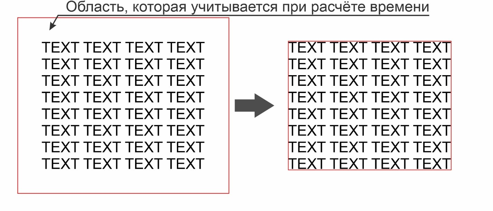
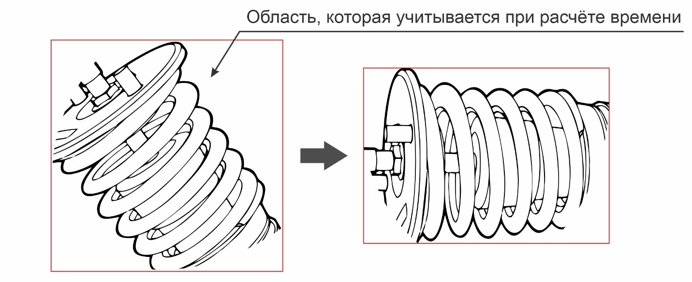
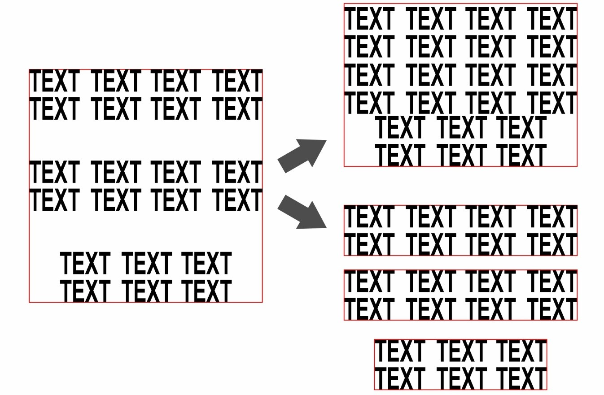

При сохранении макета не стоит использовать внешние рамки,
добавляющие белые поля (Рисунок 1). Это связано с тем, что в
алгоритме расчёта учитывается динамика гравировки
(холостой ход лазерного луча);

Рисунок 1 - Пример сохранения макета без рамок
Если макет находится под углом, то его необходимо повернуть так,
чтобы он занимал наиболее горизонтальное/вертикальное положение
(Рисунок 2). Аналогично прошлому совету, данный метод позволит
избежать учёта больших белых областей фона, включаемых в расчёт;

Рисунок 2 - Пример расположения макета
Если макет разбит на несколько элементов, которые
располагаются друг от друга на расстоянии, то можно либо сохранить
эти элементы отдельно, либо сдвинуть их ближе, и сохранить
одним плотным макетом (Рисунок 3);

Рисунок 3 - Пример разбиения и уплотнения макета
Обратите внимание на тип макета, чтобы выбрать наиболее
подходящий результат расчёта (Рисунки 4-6).
Рисунок 4 - Пример жирного текста (слева) и неплотного рисунка (справа)Рисунок 5 - Пример изображений из тонких линий
Рисунок 6 - Пример обычного текста (слева) и плотного изображения с большим количеством элементов (справа)
⚠
Относительная погрешность метода при правильном его использовании не
превышает 10 %. При этом метод является лишь приближением реального
результата и использовать за эталон ценообразования рекомендуется
только как ориентир!
Тем не менее алгоритм даёт хороший результат для понимания
предстоящих временных затрат на работу оборудования.